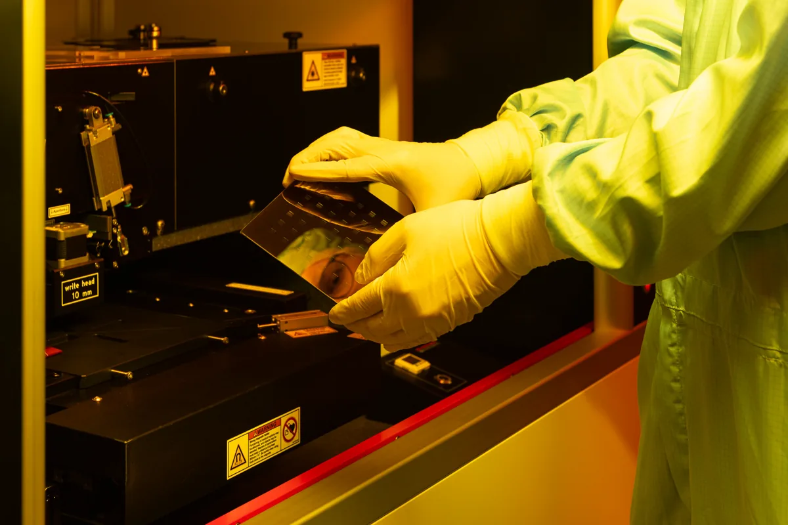
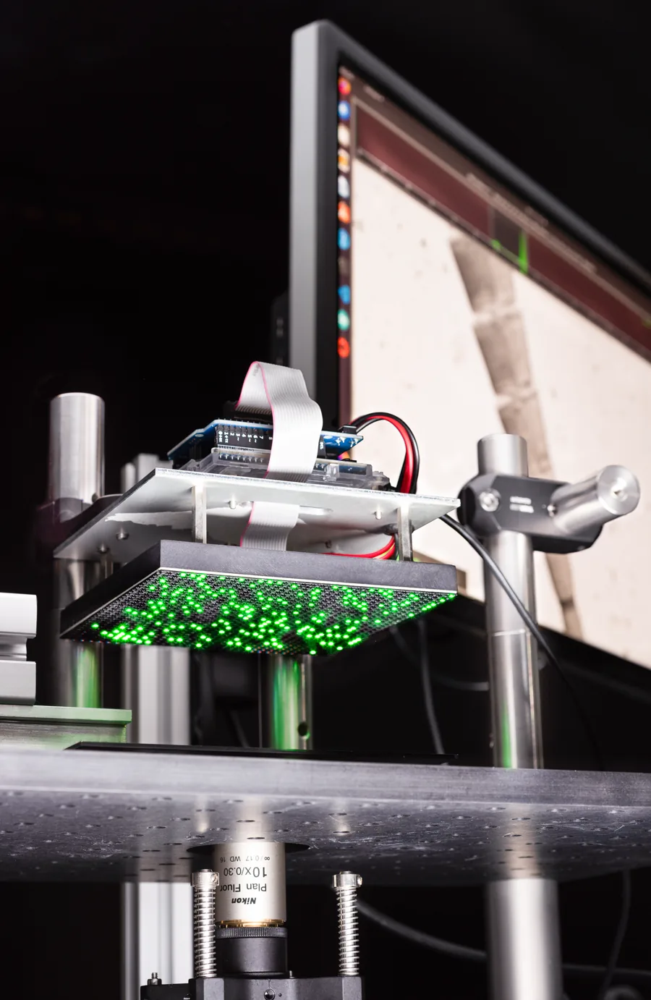

Master of Science M.Sc.
Computer Science
Core computing methods are explored through scientific and project-based work, with strengths in embedded intelligence, visual computing, and AI-enabled software.
View the official Computer Science programmeInternational study and research pathway
Excellence in Computer Science and Electrical Engineering Leadership in Siegen (EXCELS) programme prepares selected international Bachelor’s students for a tuition-free and research-oriented Master’s study at the University of Siegen.

Quick facts
Early fit check
EXCELS is designed for students whose academic background, study stage, and research interests align with the project.

WHERE WE RECRUIT
At the moment, EXCELS recruits prospective Master’s students in China, Ghana, India, Kenya, Pakistan, Thailand, and Vietnam.
The EXCELS pathway
EXCELS begins with online Digital Preparation and continues through separate selection for the 14-day Summer School. Admission to a Master’s programme and selection for a stipend are separate decisions.
Apply for Digital Preparation under the published intake requirements. Selection is based primarily on academic performance.
Complete online preparation in AI and sensor systems, academic orientation, University guidance, and exchange with researchers.
Selection considers the required documents, academic strength, research fit, and a technical interview. Participants spend 14 days at the University of Siegen, joining project work, laboratory visits, research exchange, and networking.
Master’s admission is decided separately by the University. Following enrolment, up to two participants may be selected for a €992 monthly stipend for up to 24 months.
Master’s study and research
The English-taught Master’s programmes in Computer Science, Electrical Engineering, and Mechatronic Engineering connect AI, computing, electronics, communications, and intelligent sensor systems.
Master of Science M.Sc.
Core computing methods are explored through scientific and project-based work, with strengths in embedded intelligence, visual computing, and AI-enabled software.
View the official Computer Science programmeMaster of Science M.Sc.
Advanced study is grounded in scientific principles, with applications across communications, electronic systems, semiconductor devices, and sensor technology.
View the official Electrical Engineering programmeMaster of Science M.Sc.
Mechanical engineering, electrical engineering, and computer science come together in intelligent systems built around microcontrollers, sensors, actuators, and modern software.
View the official Mechatronic Engineering programmeResearch at ZESS
At ZESS, sensor development connects with data processing and artificial intelligence in interdisciplinary research at the University of Siegen.

Research spans novel sensor principles and the development of sensors for new measurement systems.
INCYTE cleanroom · Photo: Jan Söhlke / ZESS, University of Siegen.

Signals from multiple sensors are processed and combined to extract reliable, meaningful information.
Hitchhiker II passive radar · Photo: Jan Söhlke / ZESS, University of Siegen.

Optics, sensor design, and reconstruction methods reveal detail beyond conventional imaging.
Fourier ptychographic microscopy · Photo: Jan Söhlke / ZESS, University of Siegen.
Inside ZESS

Center for Sensor Systems (ZESS)
ZESS is an interdisciplinary research hub spanning electrical engineering, computer science, mechanical engineering, mechatronics, mathematics, and biology. It combines fundamental and applied research with industry projects and transfers knowledge into teaching and postgraduate education.
Explore the official ZESS websiteZESS building at dusk · Photo: Jan Söhlke / ZESS, University of Siegen.

ZESS Research Forum
The Summer School is planned to connect with the annual ZESS Research Forum, where doctoral researchers share their work through talks and poster presentations. Structured conversations are intended to help participants meet researchers, explore topics, and understand potential research pathways.
Researchers and guests at the 2026 forum · Photo: Jan Söhlke / ZESS, University of Siegen.

Research recognition
VDI-sponsored awards recognise the Best Poster and Best Lightning Talk presentations after a day of interdisciplinary exchange at ZESS.
2026 forum award recipients · Photo: Jan Söhlke / ZESS, University of Siegen.
Study and live in Siegen
EXCELS opens the door to an international university community in a compact city where campus, culture and green surroundings are close at hand.
International student support
Alongside EXCELS, the University’s International Office and student services help international students prepare for their arrival, settle into Siegen and navigate university life.
Application guide
EXCELS has separate selection stages for Digital Prep and the research-oriented Summer School. Check the applicable intake information for eligibility, required evidence, dates, and participation details.
Application checklist
Use the early fit guide to review your study stage, academic background, academic strength, and research direction.
Compare the relevant Master’s programmes and their individual admission requirements.
Confirm the applicant scope, eligibility rules, required evidence, and dates for that intake.
Gather the evidence specified for the intake, ready for submission.
Submit your EXCELS application and required documents through the official form by the published deadline.
Application requirements
Prepare a concise overview of your education, relevant coursework, technical skills, projects, research exposure, internships, and other relevant experience.
Have a current transcript or equivalent academic record ready, together with evidence of enrolment or completion. It should make your grades and relevant mathematical or algorithmic preparation clear.
Collect relevant project summaries, thesis work, publications, presentations, research placements, internships, or comparable technical work. State your own contribution and its connection to AI, sensor systems, or microelectronics.
Explain why EXCELS and research-oriented Master’s study in Siegen fit your background, interests, development goals, and intended technology-oriented career.
Prepare any language evidence, translations, recommendations, certificates, or contextual information requested for the intake, following the stated requirements exactly.
Applicant guidance
Explore the complete EXCELS pathway by topic. Whenever an answer depends on a particular round, the published intake information takes precedence.
EXCELS is not a degree programme. It is a preparation and connection pathway built around online Digital Prep, a separately selected research Summer School, and planned transition support. You must apply independently for a University Master’s programme and meet its admission and enrolment requirements.
EXCELS is intended for high-performing international Bachelor’s students nearing the end of a relevant degree who want to explore research-oriented Master’s study in Siegen. A strong interest in artificial intelligence, sensor systems, or microelectronics is central; each intake defines its binding applicant scope.
Yes. The planned target group includes students in the penultimate or final year of their Bachelor’s studies. You will need to demonstrate your current academic standing as required by the intake, while later Master’s admission remains conditional on meeting the chosen degree programme’s requirements.
Computer science, electrical engineering, mechatronics, and closely related STEM fields are the clearest starting points. The early fit guide explains the expected academic strength, mathematical or algorithmic preparation, and thematic direction.
EXCELS concentrates its outreach on selected universities and regions in Asia and Sub-Saharan Africa. That recruitment focus is not a permanent substitute for formal eligibility rules. The Academic Horizons programme is intended to attract prospective international Master’s students to Germany, rather than students already studying at a German university; the applicable EXCELS intake states the exact country, institution, and residence conditions.
This site introduces Computer Science, Electrical Engineering, and Mechatronics as relevant English-taught study directions. Their subject requirements and accepted forms of English-language evidence may differ; their examination boards decide admission independently, and the applicable EXCELS intake identifies the routes connected with that round.
EXCELS applications are submitted through a dedicated University of Siegen MoveON form. Use the form link and application deadline published on this page for the relevant intake. Do not use another University MoveON form; the University’s Master’s application remains a separate process.
EXCELS is organised around a shared AI and sensor-systems pathway, not a standing catalogue of individually advertised research projects. Present a coherent research direction and follow any topic-choice or ranking instructions that appear in the relevant intake.
Start with a concise academic CV, a current transcript and evidence of degree status, examples of relevant technical or research work, and a focused motivation statement. The preparation checklist is a guide, not a final document call; only the evidence named in the applicable intake is mandatory.
If requested for the intake, your CV should make your preparation visible through specific coursework, technical skills, projects, internships, thesis work, or research exposure, including your own contribution. Your motivation statement should connect that evidence to the EXCELS research focus, your preferred study direction in Siegen, and the development goals you genuinely intend to pursue.
Formal research employment or a publication is not the only evidence of potential. A substantial thesis, capstone, laboratory assignment, course project, internship, or self-directed technical investigation can be valuable when you explain the problem, your decisions, your individual contribution, and what you learned.
For EXCELS, provide proof of English at C1 level or official confirmation that your Bachelor’s programme is taught in English. Master’s programmes have separate language requirements; an English-taught degree does not automatically replace a language test. Check the official ETI application overview for Master’s requirements and the EXCELS intake notice for accepted documents, translations, recommendations, and file formats.
Previous academic performance, particularly grades, is the planned primary basis. The project plan describes candidates as generally being in the top quartile of their cohort or demonstrably among the stronger students in their degree programme; the intake notice provides the operative assessment rules.
The separate review is planned to consider academic excellence, mathematical and algorithmic foundations, thematic fit, relevant work, motivation, development potential, and active preparation. Qualified candidates are expected to complete a brief online technical interview before a joint decision by representatives of ETI, ZESS, and the International Office.
No. Digital Prep and the Summer School have separate selection decisions. Participation may strengthen the evidence of active preparation, but it does not create an automatic right to join the in-person cohort.
The project expects most Summer School participants to come from Digital Prep, but the plan does not establish that as an absolute rule. Each intake must say whether any other route is available; applicants should not assume a direct-entry option.
The planned Summer School review is transparent and non-discriminatory, with a holistic view that can recognise educational barriers overcome alongside academic strength, intercultural competence, and social engagement. Provide contextual or sensitive information only through the route and evidence rules stated for the intake.
Each decision applies only to its own process. Not receiving a Summer School invitation does not become a Master’s rejection, so you may still make a separate degree application if eligible. Equally, EXCELS participation cannot override the examination board’s admission decision or guarantee a place on a degree.
The online programme is planned to combine academic modules in AI and sensor systems with orientation to German teaching, learning, and examination culture, administrative guidance, and moderated exchange with teachers and researchers. The intake information defines the schedule, platform, workload, and participation conditions.
No. Digital Prep is the online stage; the Summer School is planned as a 14-day experience in Siegen for a selected cohort of 15. One round is expected in June or July of 2027, 2028, and 2029, with exact dates published for each intake.
No participation fee is planned for Digital Prep or the Summer School, and travel and accommodation support is planned for the selected in-person cohort. The intake information must define eligible costs, booking or reimbursement arrangements, and anything participants must pay themselves.
This does not fund an entire Master’s degree. The University currently charges no tuition, but enrolled students pay a semester contribution and must finance their living costs, health insurance, and immigration requirements where applicable; use the University’s current financing guidance when planning.
No. EXCELS is not a general Master’s scholarship and does not guarantee degree admission, an internship, or employment. The limited ZESS stipend is a separate award for up to two selected newly enrolled international Master’s students and is not automatic; applicants should never plan their study finances on the basis of EXCELS participation alone.
Participants remain responsible for meeting immigration and insurance requirements, and an EXCELS selection does not guarantee a visa. A short Summer School visit and later degree study may require different immigration steps; consult the responsible German diplomatic mission and the University’s visa and residence guidance.
Degree students arrange their own housing, and admission does not include a room. Use the University’s accommodation guidance; Summer School travel and lodging arrangements are communicated separately to the selected cohort.
Use the contact directory according to the subject. The project lead handles EXCELS’ academic direction and structure, ETI provides degree-application guidance, and the International Office supports questions about arrival and international-student services. Personal mentoring belongs to a later selected transition phase and is not automatic for every Digital Prep participant.
EXCELS 2027
Contact EXCELS
Contact the project lead for questions about EXCELS’ academic direction and programme structure. Degree admission and international-student services have their own University guidance.
Project lead
Chair of Ubiquitous Computing
Department of Electrical Engineering and Computer Science (ETI), Faculty IV
Project background and funding
EXCELS is led by the Department of Electrical Engineering and Computer Science (ETI), working with the Center for Sensor Systems (ZESS) and the International Office.
EXCELS is funded by the German Academic Exchange Service (DAAD) with funds from the Federal Ministry of Research, Technology and Space (BMFTR) through the programme Academic Horizons – Attracting Global Minds, part of the 1.000-Köpfe-Plus-Programm.